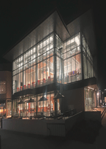

Jeremiah Anderson's Digital Photo Project |
||
| Home Photo Project Video Project Print Project Info Project | ||
|
 Student at Millersville University |
The purpose of this assignment is to practice and apply photography abilities by producing digital images with good lighting, sufficient resolution, and intriguing composition. This entails knowing how to modify camera settings to produce high-quality photos, enhancing subjects with natural or artificial light, and utilizing visual design concepts like focal point, balance, and contrast to produce visually pleasing and captivating images. As a result of this approach, students will become more proficient with digital cameras and develop a greater understanding of the expressive and creative possibilities of photography. |
|
|
©: 2025 Jeremiah Anderson | ||